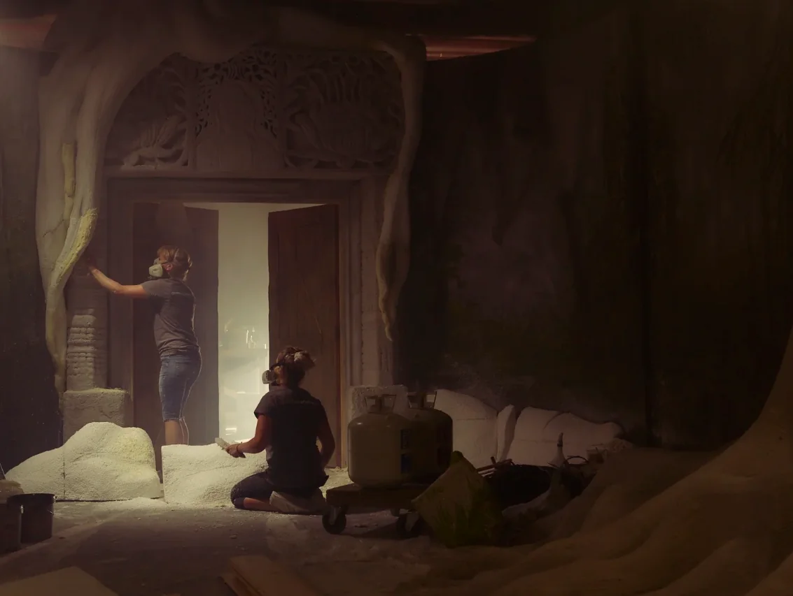
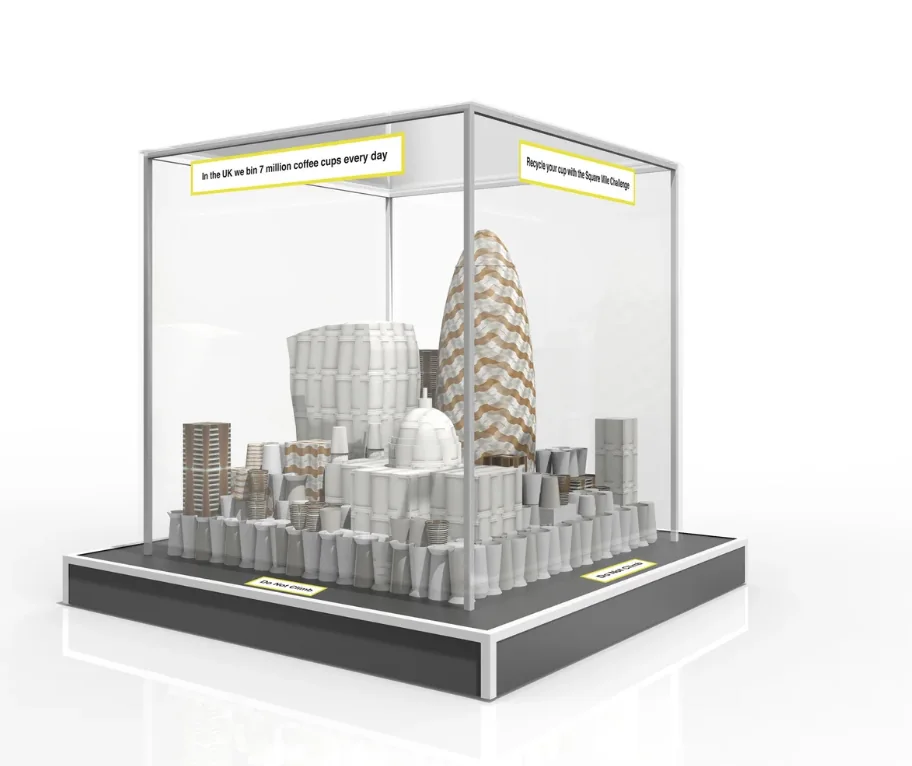

Architect · 3D designer · Spatial storyteller
I design spaces
that bring stories
to life.
Immersive environments, live experiences and architecture — shaped from the first idea through to the real world.
Explore selected work

DESIGN↗
SELECTED WORK / 3D · IMMERSIVE · ARCHITECTURE
Ideas made tangible
Selected work.
A selection of immersive environments, campaign installations, spatial concepts, BIM work and architectural visualisation.
in an immersive programme
rooms delivered
coordination
conference environment
A bit about me
Design instinct.
Architect’s eye.
I’m Georgina, an ARB-registered architect and 3D designer working where story, space and technology meet.
My work spans immersive attractions, event environments, campaign installations and architecture. I enjoy moving between the big idea and the practical detail: developing a spatial concept, communicating it in 3D, and working with clients, suppliers and delivery teams to make it real.
My architectural background brings a strong understanding of materials, buildability, construction, safety and coordination. I’m confident presenting design ideas and collaborating across creative and technical teams.
ARB-registered Architect · RIBA member · Based in Hove, available for UK and international projects
Have a project in mind?
Let’s make something
memorable.
For creative collaborations, design roles and project enquiries.
Visit McLeod35 ↗